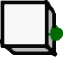
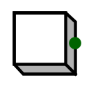

Button| Library: | Input/Output |
| Introduced: | 2.1.3 |
| Appearance: |
 |
Behavior
Outputs 0 normally; but while the user is pressing the button using the Poke Tool, the output is 1. If a trigger key is assigned, holding that key does the same thing while the Poke Tool is selected and the canvas has focus. Several buttons can be held down together by holding their keys at the same time. The key produces the same output change as holding the mouse.
Pins
A button has only one pin, a 1-bit output, which is 0 except while the user is pressing the button with the Poke Tool or with its trigger key, when it is 1.
Attributes
When the component is selected or being added, the arrow keys alter its Facing
attribute.
- Facing
- The location of the output pin relative to the component.
- Color
- The color with which to display the button.
- Trigger key
- A letter (A–Z) or digit (0–9) that presses the button while the key is held. The character is drawn on the button. The Poke Tool must be selected and the canvas must have focus. The key does nothing while the pointer tool is selected or while the properties table has focus. Each key can belong to only one button in the same circuit; the same key may be used again in another circuit. (none) leaves the button controlled only by the mouse. Digits on the numeric keypad use the same mapping as the number row. On a Russian layout, the letter is the Latin letter printed on that key. Ctrl, Alt, and Meta do not start a press, so ordinary keyboard commands keep working. Releasing a key that is already holding a button still releases it if Ctrl, Alt, or Meta went down in between. Holding the button with the mouse and with its key at the same time keeps it down until both are released.
- Label
- The text within the label associated with the component.
- Label Location
- The location of the label relative to the component.
- Label Font
- The font with which to render the label.
- Label Color
- The color with which to draw the label.
Poke Tool Behavior
When the mouse button is pressed, the component's output will be 1. Upon releasing the mouse button, the output reverts back to 0. Holding the button's trigger key does the same while this tool is selected and the canvas has focus. The button stays down while either the mouse or the key is still held. Leaving the canvas, choosing another tool, or opening another circuit releases keys that were holding buttons. A button held only with the mouse stays pressed.
Text Tool Behavior
Allows the label associated with the component to be edited.